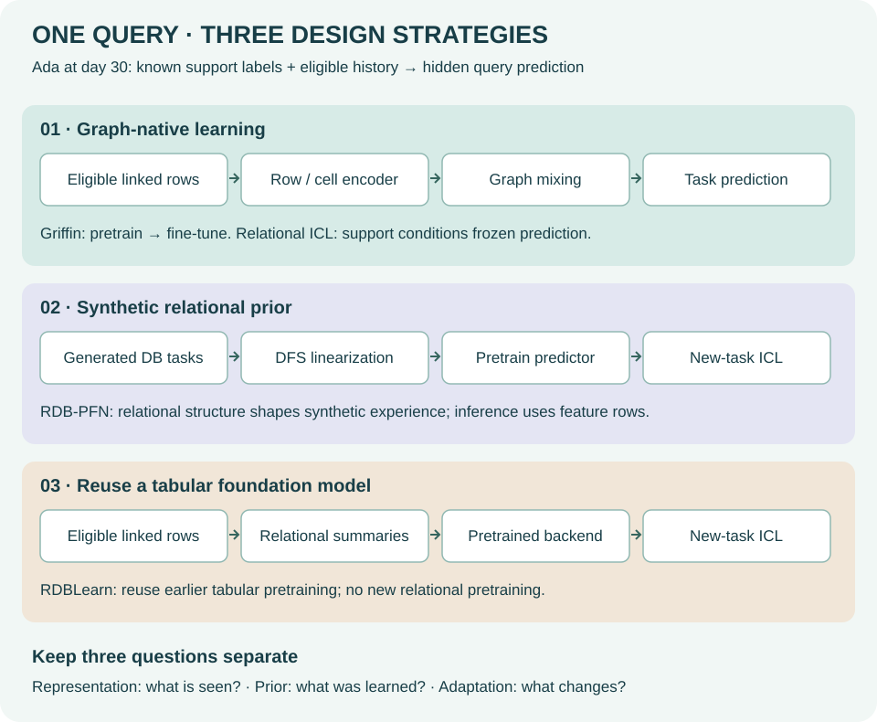

Year 5 · Q4 · Lesson 197 · Synthesis and writing
Draw the landscape. Defend one claim.¶
Lesson 195 challenged the undervaluation thesis. Lesson 196 turned one implementation finding into an answerable question. Now turn the year's evidence into an argument a skeptical reader can inspect.
Your win: write a foundation-model landscape essay with one defensible conclusion and a concrete condition that would change your mind. Read the core in 15 minutes, then spend 30–45 minutes drafting. This is rehearsal for choosing a Year 6 research direction, not a completed Year 5 exit exam.
1 · Choose the scope of your argument¶
INCOMPLETE_SOURCE_PREPROCESSING_GATE. Your essay: PENDING_WRITTEN_DEFENSE.2 · Three strategies, three different questions¶
In plain terms. Ask where relational information enters, where the model learned its prior experience, and what must be trained for a new database. These are different questions.
A foundation model reuses knowledge learned across tasks. Pretraining learns reusable parameters before the target task. In-context learning (ICL) conditions a prediction on labeled examples without updating those parameters. The labeled examples are the support; the unlabeled example is the query. A frozen model can still consume target labels through its support set.
A foreign key points from one table row to another. A temporal cutoff specifies when a prediction is made; information must be available by that time. Deep Feature Synthesis (DFS) constructs columns by aggregating linked records, such as a customer's historical order count. A flat feature table can therefore contain relational information.
The planned L170b synthesis is not yet a standalone lesson. The following map supplies its prerequisite here. Its three strategies overlap: a graph-native model could also use synthetic pretraining.


| Strategy | Where relational information enters | What is learned beforehand | New-task adaptation | Main question to test |
|---|---|---|---|---|
| Graph-native learning | Row encoders and messages/attention along database links | Shared representations from pretraining tasks | Model-dependent: fine-tuning or labeled context | Do learned interactions improve on equally informed summaries? |
| Synthetic relational prior | Generate relational tasks, then linearize with DFS for RDB-PFN | A predictor trained on generated tasks | Labeled context with frozen weights | Does that prior transfer beyond its generated assumptions? |
| Reuse a tabular foundation model | Relational aggregation produces a feature table for RDBLearn | The existing tabular backend was already pretrained | Context at inference; no new relational pretraining | Are these summaries sufficient under the same information budget? |
Graph-native does not imply ICL. Griffin uses cell encoding, graph message passing and task decoders, followed by target-task fine-tuning in the selected protocol. Griffin §§3–4. KumoRFM-2 instead offers relational ICL and separate fine-tuning experiments; its attention spans cells, linked rows and examples. KumoRFM-2 §§3–4.
A relational prior need not mean graph-native inference. RDB-PFN trains on synthetic relational tasks and consumes DFS-linearized inputs. RDB-PFN §5. RDBLearn combines aggregation with an existing tabular model. “Training-free” here does not erase that backend's pretraining, feature construction or inference costs. RDBLearn §3.
Worked query trace. Predict whether customer Ada will churn after day 30. Her orders before the cutoff are known; her future churn label is hidden. A graph model combines Ada's row with eligible order rows. A DFS pipeline may replace the orders with count and sum columns, then pass Ada and labeled support rows to a predictor. RDB-PFN and RDBLearn can share that feature representation while differing in the prior learned before this task. If the summaries discard order sequence, they cannot recover that sequence merely by using a larger predictor. This does not prove sequence matters for this target.
Make the information loss concrete. For two hypothetical customers, keep event times day 10 and day 20 fixed and swap amounts. The query cutoff is day 30. Define an authored toy target to be 1 exactly when the latest historical amount exceeds 2:
| Customer | Amounts at days 10,20 | Count, sum | Toy target |
|---|---|---|---|
| Ada | 1,3 | 2,4 | 1 |
| Bo | 3,1 | 2,4 | 0 |
A deterministic predictor receiving only count and sum gets the same input for both customers, so it cannot assign them different predictions. This particular feature map loses information needed by this particular target. It does not show that a GNN necessarily retains or learns the order.
Transfer the trace. Add one legal feature: the latest amount before cutoff. The feature vectors become (2,4,3) and (2,4,1), resolving the collision without changing the predictor family. Your essay must therefore distinguish “this summary is insufficient” from “all tabular representations are insufficient.” For a target depending only on the sum, the original collision need not matter at all.
Write a prediction: which comparison would isolate the value of relational information? Hold the predictor fixed and compare target-only features with legal relational summaries. Comparing two systems that both use related rows answers a different question.
3 · “Open versus proprietary” needs a comparison contract¶
Openness has several axes: implementation code, model weights, training data, license, and enough protocol detail to rerun the experiment. An API provides access to predictions. An open repository provides access to code. Neither alone establishes that you can reproduce a historical model.
For this essay, freeze the L191 comparison: KumoRFM-2 v1, Tables 3, 4, 7 and 8. The bounded open-code foundation pool is RDBLearn and Griffin; the supervised pool is LightGBM, GraphSAGE, RelGNN and RelGT, where present. These are inspected comparison pools, not a census of every current method. L191 protocol.
Worked example. On Table 3's 12 tasks, Kumo's mean published AUROC exceeds the best eligible single foundation method by 4.0533 percentage points. Include supervised methods and that gap becomes 1.5417 points, against RelGNN. The Kumo scores did not change; the eligible comparison changed. Complete reconstructed report.
AUROC measures ranking of positive examples above negative ones; higher is better. Here its table uses a 0–100 scale. MAE averages absolute prediction error; lower is better. Regression tables divide each method's error by LightGBM's error on that same task before averaging. These ratios are dimensionless. Do not average raw errors from unrelated targets or mix them with AUROC.
| Table / task count | Metric units | Best foundation gap | Best combined-pool gap | Combined taskwise oracle gap |
|---|---|---|---|---|
| 3 / 12 | AUROC percentage points | RDBLearn: 4.0533 | RelGNN: 1.5417 | 1.3333 |
| 4 / 5 | AUROC percentage points | No eligible comparator | GraphSAGE: 1.5900 | 1.5900 |
| 7 / 9 | Normalized MAE ratio | RDBLearn: 0.0835 | RelGNN: 0.0392 | 0.0288 |
| 8 / 2 | Normalized MAE ratio | No eligible comparator | GraphSAGE: 0.0244 | 0.0244 |
A taskwise oracle selects the best published test result separately for each task. It is an optimistic retrospective envelope, not one deployable method. A single-method winner selected from these test tables is also descriptive; prospective selection must use validation data.
Scope check. All four tables are reconstructed in full: 401 task cells plus 90 published summary cells. Five aggregates fall outside the derived rounding bounds; 34 displayed mean ranks differ from the published ranks. Preserve these differences, rather than quietly substituting corrected-looking numbers. The audit uses displayed precision and cannot recover hidden precision. No eligible foundation comparator is present in Tables 4 or 8. That means missing comparison, not an infinite advantage. Independent checks.
4 · Let the evidence change the sentence¶
The complete L195 replay retains all five L149 seeds, all thirty L182 saved runs and the full 21-task L194 inventory. Keys include both entity and cutoff. Regression is scored in float64 against common saved targets, while retaining the original GNN float32-target discrepancy. This is a new execution of old evidence, not an independent experimental replication. Frozen protocol.
| Saved comparison | Complete measurement | What it supports |
|---|---|---|
| L149, five seeds per pipeline | Test GNN MAE 4.1231; relational-FE MAE 3.9489; GNN advantage -0.1742 | FE has lower mean loss in this saved comparison. |
| L149 conditional uncertainty | 95% driver interval [-0.4496, 0.0859] | Neither superiority nor equivalence established. |
| L182, three arms × ten draws | RDB-PFN minus TabICL +0.004369 AUROC; positive on 6/10 draws | Scoped saved-system comparison on one task. |
| L194, 21 declared tasks | 0 fresh tasks; published signs 17 / 3 / 1 | Complete inventory of missing fresh evidence. |
Read the uncertainty correctly. The regression interval resamples whole drivers, keeping their rows together. It uses 2,000 original draws with seed 137 and holds trained models and the split fixed. It does not cover all shared race/time dependencies or generalization to new databases. An interval crossing zero establishes neither superiority nor equivalence. The ten ICL support draws reuse one test population; they are not ten independent databases.
Missing scores are still missing. RDBLearn's 21 published comparisons have 17 favorable, 3 unfavorable and 1 equal reference signs against AutoGluon+DFS. Every fresh score remains null behind INCOMPLETE_SOURCE_PREPROCESSING_GATE. The preprocessing issue is an obstacle to reproduction; it is not a measured model defeat. L194 analysis.
5 · Build one paragraph from five parts¶
In plain terms. Give the reader a claim, the evidence behind it, and a reason the evidence bears on that claim. Then say what it cannot decide and what would change your position.
A warrant is the reasoning that connects evidence to a claim. A revision condition is an observable result that would make you narrow, strengthen or abandon the claim.
| Part | Worked sentence |
|---|---|
| Claim | This saved F1 comparison does not establish a practical advantage for the basic GNN. |
| Evidence | Across five seeds, its test MAE is 4.1231 versus 3.9489 for relational FE; the driver interval for its advantage is −0.4496 to +0.0859. |
| Warrant | The point estimate favors FE, and the conditional interval includes both signs. |
| Limitation | Both pipelines use relational information; the comparison does not isolate the value of that information or test every graph architecture. |
| Revision condition | A preregistered study on untouched tasks with matched information, search budgets and a justified practical margin could change this conclusion. |
Repair the overclaim. “The graph model lost, so relational learning has no value.” Replace it with the worked claim above. The first sentence changes the subject from a particular pipeline to all uses of relational data.
The undervaluation thesis has four steps. Useful relational signal; value from learning how to use it; robust benefit under fair comparisons; and economic value underrecognized by adopters or investors. Predictive scores alone do not measure engineering cost, business utility or market expectations. Preserve the dossier's C1–C4 identities when discussing these steps. Thesis stress-test reference.
6 · Your essay: one position, three strategies, a fair objection¶
Write 800–1,200 words. Treat this as a target, not an automatic quality score. First draw the map from memory; then consult sources. Organize the essay into five short sections:
- Position: state what remains plausible and what remains unestablished about the thesis.
- Landscape: trace the three strategies for the same query. Explain their overlap and separate prior, representation and adaptation.
- Open/proprietary gap: declare date/version, eligible pool, tasks and metric. Use a measured example and discuss reproducibility access separately from reported performance.
- Strongest objection and response: use both favorable and unfavorable evidence, retain missing results, and limit your conclusion.
- Revision condition: propose a fair comparison that could change your mind. Include untouched tasks, information access, validation-only selection, a practical margin and total cost.
| Dimension | Ready for review when… | Revise when… |
|---|---|---|
| Mechanism | Same query traced; representation, prior and adaptation separated | Treating the strategies as disjoint or equating frozen weights with no label access |
| Comparison | Version, pool, task coverage and metric are explicit | Cherry-picking tasks or silently changing the eligible pool |
| Evidence | Published, replayed and fresh lanes are distinguished | Promoting missing scores, replay or a source diagnostic to new model results |
| Argument | Evidence supports the actual claim through an explicit warrant | Jumping from one pipeline comparison to all architectures or economic value |
| Counterargument | Strongest objection and uncertainty are addressed fairly | Treating a zero-crossing interval as proof of equivalence |
| Revision | A feasible comparison and result would change the conclusion | Proposing a study that cannot challenge the preferred answer |
Pass standard: a human review finds every dimension defensible, with no invented fresh scores, causal claims from uncontrolled comparisons, or equivalence claims from an interval crossing zero. Word count and field presence cannot certify this. Your current state stays PENDING_WRITTEN_DEFENSE until your own argument is reviewed.
Read the author’s worked essay after drafting yours
A relational opportunity with unfinished proof¶
Author reference essay, dated 2 October 2026. This is not the learner's submission or a claim of mastery. Its numerical claims refer to the frozen L197 packet, not a continuously updated leaderboard.
Position¶
My Year 5 position is that relational prediction remains a promising research direction, but the stronger claim that learned relational systems are broadly superior and economically undervalued is not established by our evidence. This distinction changes what I would do next. I would invest in a fair, falsifiable comparison, rather than present selected score advantages as a completed argument. The useful conclusion is a research commitment with a stop condition: pursue the opportunity while retaining the possibility that well-designed relational summaries offer the better practical system.
The mission's four steps must remain separate. Useful information in linked records does not automatically require a graph-native predictor. A good graph predictor does not automatically outperform a strong, equally informed alternative. A repeatable advantage on selected tasks does not establish robust advantage across databases. Finally, predictive performance does not by itself show that customers, engineers or investors underestimate the economic value. Each step requires additional evidence.
A map of the design choices¶
The landscape is clearer when organized by representation, prior experience and adaptation. A representation specifies what the predictor receives. A prior here means the patterns learned before the target task. Adaptation specifies how the new task influences predictions. These axes can vary independently; the three course strategies are useful organizing examples rather than mutually exclusive classes.
In graph-native learning, rows are represented as linked objects and the predictor learns to combine information across those links. Griffin illustrates pretraining followed by target-task fine-tuning; graph-native therefore does not necessarily mean frozen in-context inference. In a synthetic relational-prior strategy, generated relational tasks supply prior experience. RDB-PFN shows that such a prior can be paired with DFS-linearized inputs. A reuse strategy such as RDBLearn aggregates related records and supplies the resulting table to an existing tabular foundation model. Its lack of new relational pretraining does not remove the backend's earlier training or the cost of constructing features. Griffin, RDB-PFN, RDBLearn.
Consider a customer at a fixed prediction cutoff. Linked orders can enter as individual row representations or as summary columns. Both routes use relational data. If two systems consume the same summaries but have different pretrained predictors, their comparison concerns those systems under that representation. It cannot establish that learned graph processing is necessary. Conversely, a summary's inability to distinguish two histories only matters predictively if that distinction bears on the target. Expressivity and useful accuracy are related questions, but one is not a substitute for measuring the other.
The open/proprietary gap depends on the contract¶
“Best open model” is incomplete until it identifies what is open and which methods are eligible. Implementation code, weights, training data and protocol access are different resources. A prediction API can be useful without making historical training reproducible. Open code can be inspectable while leaving a local rerun blocked. I therefore separate reported performance from reproduction access.
The frozen L191 comparison uses KumoRFM-2 v1 Tables 3, 4, 7 and 8. On Table 3, including only the declared open-code foundation methods yields a 4.0533-point AUROC gap to Kumo. Including the declared supervised methods reduces it to 1.5417 points. The winner in that broader single-method pool is RelGNN. This does not make either calculation dishonest; it makes the eligible pool essential to interpreting the sentence. Both are retrospective comparisons of published test results. Neither supplies a validation-based model-selection procedure. KumoRFM-2 v1, L197 report.
The audit preserves all 491 numeric cells, including summaries. Five aggregates exceed the derived rounding bounds, and 34 displayed mean ranks differ from their published counterparts. These differences limit the precision of a polished headline. They are retained as discrepancies, not interpreted as evidence of misconduct. Regression gaps are computed from taskwise ratios to the same LightGBM baseline. They cannot be pooled with AUROC or raw errors from other targets.
The strongest objection survives the replay¶
The strongest objection to a sweeping learned-architecture thesis is that a well-informed simpler pipeline may already recover much of the useful signal. In the complete saved F1 comparison, the basic GNN's test MAE averages 4.1231 across five seeds, versus 3.9489 for relational engineered features. The conditional driver-bootstrap interval for GNN advantage is −0.4496 to +0.0859. This crosses zero, so it establishes neither superiority nor equivalence. Both arms use relational information; the result does not show that such information lacks value. The bootstrap fixes the models and split and does not capture all race/time or new-database uncertainty. L195 replay.
The favorable evidence also deserves its full scope. Saved RDB-PFN predictions exceed TabICL by 0.004369 mean AUROC on the selected task, with positive differences on six of ten support draws. This makes the pretrained predictor worth investigating. The draws reuse a test population, however; they are not independent databases or proof of universal transfer. Re-executing these calculations does not create a new experimental replication.
The 21-task RDBLearn report is a different kind of evidence. Its published reference signs are 17 favorable, three unfavorable and one equal against AutoGluon+DFS. All fresh scores remain missing behind the preprocessing gate. A blocked reproduction should reduce confidence in what we have independently established, but it is not a measured performance loss. Counting it as one would turn an implementation obstacle into a fabricated empirical result.
What would change my mind¶
I would strengthen the practical thesis after a preregistered comparison on untouched tasks that separates target-only inputs, legal relational summaries and learned relational processing. The study must fix temporal availability, validation search budgets, comparators and the unit of uncertainty before accessing test outcomes. A practically useful margin should be justified in the application's units, not chosen after seeing results. Total engineering, training and serving costs belong beside predictive benefit.
If strong relational summaries meet that margin at lower total cost across the declared task population, I would narrow the claim that learned graph processing offers the best practical route. If learned systems retain a robust advantage under those controls, I would strengthen that claim. I would still need a separate measurement of utility and adoption or investment expectations to argue undervaluation. This is a testable Year 6 direction, not a completed economic conclusion.
7 · Run the audit and submit your defense¶
Student notebook · Executed solution · Solution notebook · Portable audit ZIP · Reference.
Implement three live functions: preserve task coverage, admit only claims supported by a declared evidence lane, and check the five argument fields without pretending to grade prose. The provided source then reconstructs every selected table and rescored prediction. Wrong implementations must fail the checks; each function affects your report or submission.
For a local run from the repository root:
.venv/bin/python labs/_budget_l197.py .venv/bin/python labs/_audit_l197.py
.venv/bin/python labs/_budget_l197.py .venv/bin/python labs/_verify_l197.py
The standalone ZIP has its own instructions. The notebook embeds all frozen inputs and displays the load-bearing code. No model weights, API calls or new training are used. The author run has a $0 cloud/API budget and an aggregate 1,800-second local execution limit. Budget ledger.
Primary reading: KumoRFM-2 v1, architecture and Tables 3/4/7/8. Read one table caption and the context policy before using its gap. Use Griffin, RDB-PFN and RDBLearn to verify the map's distinctions.
Bring your draft back to the agent. Ask about any unclear mechanism or inference; paste one paragraph for a claim-by-claim critique. In two days, redraw the three routes and reproduce one five-part argument without notes. Next, Lesson 198 turns the unresolved evidence into three ranked research proposals. This lesson prepares that decision; it does not choose your direction for you.